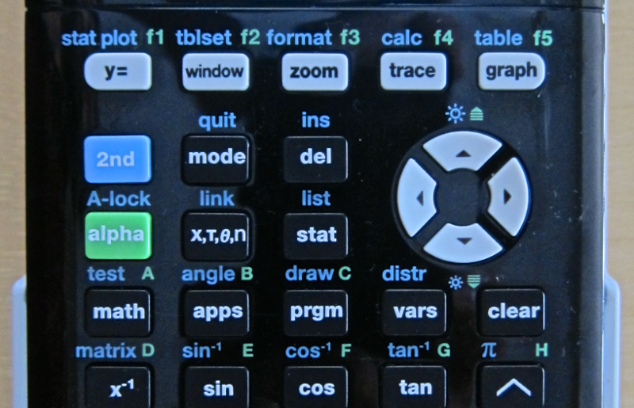
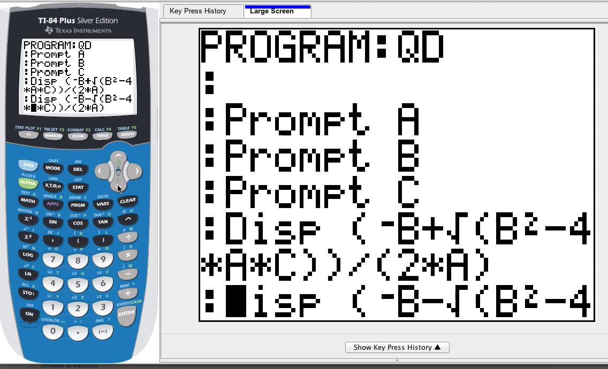
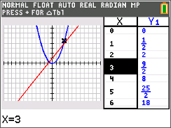

Hey, you just got a TI-84+CE… now what?
Welcome! The TI-84+CE might look intimidating at first with all those buttons, but once you understand the basics, it becomes one of your best tools for math and science. This guide will walk you through everything — from turning it on to graphing your first function.
Beginner Basics
Learn the essentials: navigating menus, entering numbers, and using the key features. You’ll understand the “2nd” and “ALPHA” keys, editing equations, and adjusting calculator modes.
What Can It Do?
Beyond arithmetic, the TI-84+CE can graph, solve equations, run programs, and even play games. This section introduces its most useful and surprising features.
Working with Functions
Learn how to input, edit, and graph equations, analyze intersections, and use the table feature to better understand how functions behave.